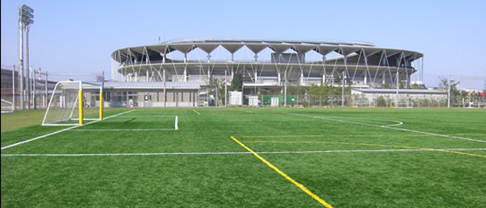
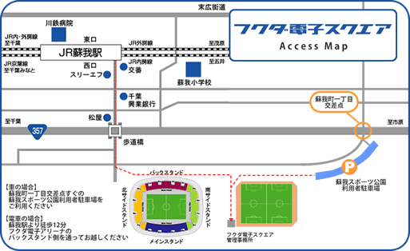
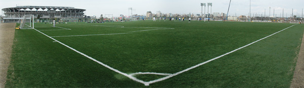

Fukuda-denshi Square Soccer Grounds - Soga, Chiba
|
|

|
|
|
- Surface: 2 new artificial football pitches, can be used 6:00am - 6:00pm (Similar surface to Hachioji Park).
- Facilities: Changing room, toilets, showers, coin lockers. Vending machines outside of ground for drinks.
- Parking: Carpark close to ground.
- Location: 12 minutes walk from Soga station on the JR Sotobo line (5 mins from Chiba)
33 mins from Tokyo station on the rapid 'WAKASHIO ltd Exp' train
Ground Website
For car Navi: 043-208-5573
- Rules: When teams & supporters leave after the match, they will make sure to clean up around the ground and changing rooms, removing all rubbish. Please follow all regulations at grounds (especially smoking!).
|
WARNING:
We have received complaints from Fukuda Denshi regarding the poor condition of the changing rooms after TML teams have used them; being left in a mess, with rubbish lying around. We CANNOT afford to lose this ground, so it is the responsibility of the teams to make sure the ground & changing rooms are left clean and tidy after use. Also, please ensure to re-attach the yellow padding to the goalposts and return the corner flags to the store-room after your match! Offenders will be held responsible & reprimanded!
|
|  |
View Larger Map |
|

|
|
|
|